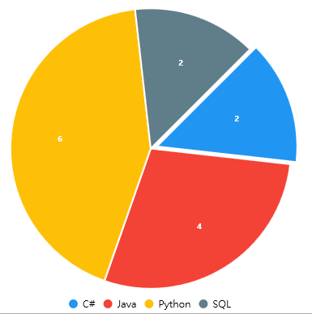
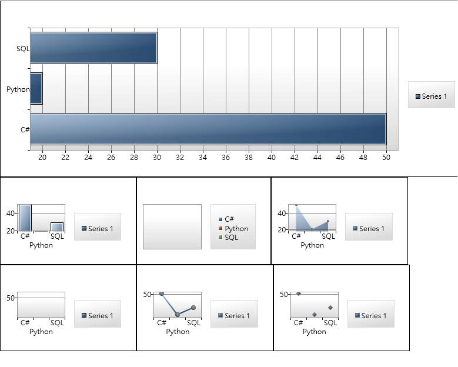

介紹兩個我常用的圖表元件
Live Chart
LiveChart介紹、SourceCode
安裝套件
nuget安裝LiveCharts.Wpf
xaml引用資源、使用圖表
1
| xmlns:lvc="clr-namespace:LiveCharts.Wpf;assembly=LiveCharts.Wpf"
|
範例
1
2
3
4
5
6
7
8
9
10
| <Grid>
<lvc:PieChart LegendLocation="Bottom" Hoverable="False" DataTooltip="{x:Null}">
<lvc:PieChart.Series>
<lvc:PieSeries Title="C#" Values="2" DataLabels="True" PushOut="8" />
<lvc:PieSeries Title="Java" Values="4" DataLabels="True" />
<lvc:PieSeries Title="Python" Values="6" DataLabels="True" />
<lvc:PieSeries Title="SQL" Values="2" DataLabels="True" />
</lvc:PieChart.Series>
</lvc:PieChart>
</Grid>
|
執行結果

優點
很漂亮，想的到的東西都會動
缺點
live chart在時限mvvm模式的時候比較不友善，而且專案也已經很久沒更新了(2018)。除此之外用的記憶體比較多，在做一些比較複雜的報表也不是說很方便，你只要看了他的sample code就會明白了…
WPF ToolKit Chart (推薦)
安裝套件
nuget安裝
1
| System.Windows.Controls.DataVisualization.Toolkit
|
引用資源
1
| xmlns:chartTool="clr-namespace:System.Windows.Controls.DataVisualization.Charting;assembly=System.Windows.Controls.DataVisualization.Toolkit"
|
範例
1
2
3
4
5
6
7
8
9
10
11
12
13
14
15
16
17
18
19
20
21
22
23
| <WrapPanel>
<chartTool:Chart Height="300" Width="800">
<chartTool:BarSeries DependentValuePath="Value" IndependentValuePath="Key" ItemsSource="{Binding DataCollection}"/>
</chartTool:Chart>
<chartTool:Chart>
<chartTool:ColumnSeries MinHeight="500" DependentValuePath="Value" IndependentValuePath="Key" ItemsSource="{Binding DataCollection}"/>
</chartTool:Chart>
<chartTool:Chart>
<chartTool:PieSeries MinHeight="500" DependentValuePath="Value" IndependentValuePath="Key" ItemsSource="{Binding DataCollection}"/>
</chartTool:Chart>
<chartTool:Chart>
<chartTool:AreaSeries MinHeight="500" DependentValuePath="Value" IndependentValuePath="Key" ItemsSource="{Binding DataCollection}"/>
</chartTool:Chart>
<chartTool:Chart>
<chartTool:BubbleSeries MinHeight="500" DependentValuePath="Value" IndependentValuePath="Key" ItemsSource="{Binding DataCollection}"/>
</chartTool:Chart>
<chartTool:Chart>
<chartTool:LineSeries MinHeight="500" DependentValuePath="Value" IndependentValuePath="Key" ItemsSource="{Binding DataCollection}"/>
</chartTool:Chart>
<chartTool:Chart>
<chartTool:ScatterSeries MinHeight="500" DependentValuePath="Value" IndependentValuePath="Key" ItemsSource="{Binding DataCollection}"/>
</chartTool:Chart>
</WrapPanel>
|
1
2
3
4
5
6
7
8
9
10
11
12
13
14
15
16
17
18
19
20
21
22
23
24
25
26
27
28
29
30
31
| public class BarChartViewModel:ViewModelBase
{
private List<DataModel> _DataCollection = new List<DataModel>();
public BarChartViewModel()
{
DataCollection.Add(new DataModel(){ Key = "C#", Value = 50});
DataCollection.Add(new DataModel(){ Key = "Python", Value = 20});
DataCollection.Add(new DataModel(){ Key = "SQL", Value = 30});
}
public List<DataModel> DataCollection
{
get
{
return _DataCollection;
}
set
{
_DataCollection = value;
OnPropertyChanged();
}
}
}
public class DataModel
{
public string Key { get; set; }
public int Value { get; set; }
}
|
執行結果

優點
雖然沒有像live chart一樣有那麼多動畫，但是可以很輕鬆滿足MVVM的設計，使用資源也很少很好用，你只要在xaml中定義chart位置，把元件的itemsource屬性綁定到ViewModel中，剩下就只要專注在設計ViewModel就可以了
缺點
比較醜
SampleCode
SampleCode